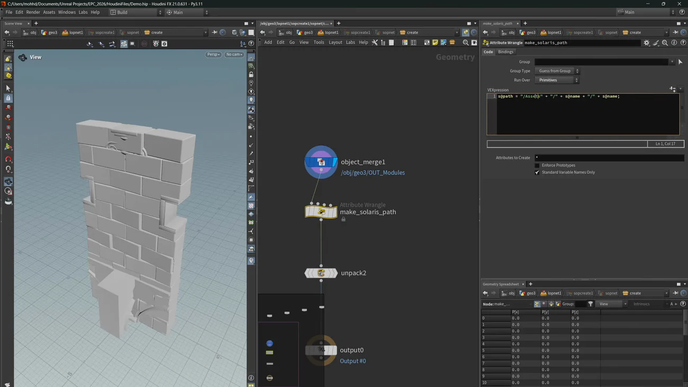

手続き的な都市 2 — PCG・USD・ISM の4ルート
出典: Procedural Cities for Games 2 | Houdini to Unreal with PCG, USD & ISMs （SideFX 公式チュートリアル Build Procedural Cities for Games の第2回 / 講師 Mohamad Salame さん（SideFX）/ Houdini 21 / 難易度 Advanced / 33:33 / 英語）。 このページは、上記の動画を見ながら自分用にまとめた日本語の学習メモです。SideFX 公式の翻訳ではありません。 前回はアセット・パイプライン・最適化でした。
この回で扱うこと
- この回の核心 — 1枚に見えるモジュールが、実は上・中・下の3層に分かれている理由
- 文法の実装の中心
grammar_resampleと、VEX を書かずに同じことをする方法 - ビューポートをクリックすると対応するノードが選択される自作ステート
- Houdini から Unreal へ出す4つのルートの比較
- Unreal が要求する USD のパス構造。なぜ名前を二重に書くのか
- ISM と HISM のどちらを選ぶか、そして per-instance custom data の使い分け
1. 1枚に見えるモジュールは3つある
前回の文法を実装側から見ていきます。グラフ全体は同じ概念の繰り返しで、 アトリビュートは Repeat / Stretch / Cull の3つ、それをモジュールごとに持ちます。
そして最大の発見がこれです。見た目が1枚のモジュールでも、実は3つのモジュールです。 上・中・下に縦に分けられています。
| 層 | 扱い |
|---|---|
| 上 | 繰り返しも伸縮もしません |
| 中 | 繰り返し・伸縮します |
| 下 | 繰り返しも伸縮もしません |
なぜ分けるのか。アーチの曲線のように伸ばしてはいけない形があるからです。 モジュール全体を1枚として伸ばすと、その曲線が歪みます。 中央だけを伸ばして上下を固定すれば、階高が変わっても形が崩れません。
そしてこれが効いてくるのは次の一点です。
階高ごとに窓のバリエーションを作り分ける必要がなくなります。 1つのモジュールを使い回して、パターン側で吸収する。
アセットを増やすのではなくルールで吸収する、という判断で、 この回でいちばん実務的な工夫だと思いました。
構成は3層になっています。prefabs（縦に積む）→
horizontal strip / facade → full building。
Enter でビューポート編集して確かめられます。
2. 階高はスライスの距離から来る
ブロックアウトをスライスし、スライス間の距離をそのまま階高として各階に格納します。 それが各階のモジュール高さを駆動します。
前回「階高をモジュールの高さと一致させる」という話がありましたが、 実装側では逆で、スライスの距離が階高を決めています。 ブロックアウトの形が変われば階高も自動で付いてくる、ということです。
3. grammar_resample — 実装の中心
実装の中心は grammar_resample というノードで、
文法パターンに基づいてラインをリサンプルします。
やっていることはこうです。プリミティブが測られて、
文法が「この部分はこの長さ」と分かるので、大きなパターンに収められます。
持っているアトリビュートは repeat / stretch / cull /
name / color（color は目視用）です。
VEX が書けなくても同じことができる
ここは親切だと思いました。VEX が書けなくても attribcreate（Attribute Create）で同じことができます。
repeat というアトリビュートを作って値を入れるだけです。
repeat の値 | 意味 |
|---|---|
0 | 無限に繰り返す |
N | ちょうど N 回 |
-1 | 隣と交互 |
前回の記法（:1:0:0）は、結局この3つのアトリビュートを書くための書き方でした。
記法を覚えなくてもアトリビュートを直接置けば動くので、
自分のネットワークに組み込むときの入口が広くなっています。
同じノードを2軸で使い回す
そして grammar_resample は横（facade）と縦（prefab）の両方に使い回されています。
最後に点を出力して、メッシュを copy to points します。
全体を prefab として命名して次段で再利用する形になっているので、 「1つの仕組みを2方向に適用する」という組み方です。
4. ビューポートをクリックするとノードが選択される
レイアウトはいつでも編集できます。 そのためにビューポートでジオメトリをクリックすると対応するノードが選択される ステートを自作しています。
これがあるとHDA を作らなくても、素の line や grid を置いて
ビューポートから直接動かせます。
シェルフツール化とホットキー割り当ては開発中で、node select のような名前になる予定だそうです。
前回の「パーツをダブルクリックしてマルチパームを編集する」と同じ発想で、 画面で触ったものとノードグラフを繋ぐことに一貫して投資しているのが分かります。 規模が大きくなるほどここが効いてくるのだと思います。
5. 建物を組み上げて出力する
組み上げは意外なほど簡単です。
- ブロックアウトをカットして、オーバーライドを足します
- あとはすでに作った facade と prefabs を
objectmergeで参照して繋ぐだけです
モジュールのオーバーライド
Wrangle を置いて if prefab == railing のような条件を書けば、
差し替えやバリアントを走らせられます。
点が全部揃っているので何でもできるという状態です。
屋根と床は別処理です。 「四角い部分だけをインスタンス化して周囲はジオメトリにする」という実験もしたそうですが、 結局メッシュ全体をそのまま使っています。やってみて戻したという話が入っているのが良いなと思いました。
6. Unreal への4つのルート
ここが後半の本題です。4つを実演して比較しています。
| ルート | 出すもの | 向き / 不向き |
|---|---|---|
| PCG + Alembic | メッシュ（バッチ書き出し）と点を別々に | 取り込み後も PCG で編集したいとき。Static Mesh Spawner が
unreal_instance アトリビュート（フルパス）を見て spawn します。
Alembic は CSV データテーブル形式より速いので 5.7 以降は Alembic 推奨。
ただしパスをハードコードするのでメッシュを移動すると壊れます
→ Data Asset 経由にすればエンジン側で差し替えられます |
| ISM / HISM エクスポータ | インスタンスを直接シーンに | PCG を通さず最速で置きます。Unreal 5.7 限定のプロトタイプで、 Window → HISM Import から。ピボットが原点から離れる場合は Calculate from Bounds で中心に寄せます |
| USD | ジオメトリとインスタンスを一緒に | 唯一まとめて出せるルートです（他2つはメッシュと点を別々に出す必要があります）。 USD Stage Editor で開くだけ。キャッシュも一緒に入ります |
| Houdini Engine | HDA そのもの | HDA をエンジンに落としてパラメータをその場で変えられます。 Houdini と Unreal を往復しなくて済みます |
PCG ルートは2ノードで済む
Unreal 側は Static Mesh Spawner が unreal_instance を読んで spawn するだけなので、
2ノードで済む簡単な構成です。ただしパスがハードコードになります。
そして色の正体がここで明かされます。
Instance Data Packer でスプレッドシートの任意アトリビュート（この例では rest_length）を読み、
per-instance custom data としてマテリアルに渡しています。
だから1枚に見えるモジュールも実は3モジュールで、それぞれ別の色を持てます。 3層に分けたことの副産物です。伸縮のための分割が、そのまま色のバリエーションにも使える形になっています。
バッチ書き出しは glTF が速い
メッシュだけを大量にコンテンツブラウザへ入れるなら、 glTF は FBX より格段に速く取り込めます（講師の実測）。 FBX と glTF の両方のバッチエクスポータがあります。
USD のパス構造

USD ルートでは、SOP Create に全アセットを入れてインスタンス化し、Save to Disk します。 Unreal では USD Stage Editor で開くだけです。
ここでパス構造を自分で作る必要があります。
attribwrangle（Run Over = Primitives）にこう書きます。
s@path = "/Assets" + "/" + s@name + "/" + s@name;なぜ名前を二重に書くのか。 Unreal は「component の下に mesh」という構造を要求します。 この書き方にすると component と mesh の階層ができます。
知らないと必ず引っかかるところだと思います。パスが1段だと Unreal 側で認識されません。
インスタンサ側は点を objectmerge で入れてアトリビュートを掃除し、
Assets 以下の component を全部集めて name でインスタンス化します。
保存形式は usda（テキスト）と usdc（バイナリ）から選べます。
ISM / HISM ルートでは、床をジオメトリとして出しているぶんは 別途更新が必要です（インスタンス化していないため）。 1つのルートで全部が済むわけではない、というのは知っておいたほうがよさそうです。
7. 最適化の実務
| 論点 | 判断 |
|---|---|
| ISM か HISM か | Nanite を使うなら ISM のほうが良い。 HISM は UE4 世代、またはインスタンスが遠く離れている場合に向きます |
| マテリアルオーバーライド | ISM ではマテリアルオーバーライドが重くなります。 per-instance custom data を使うほうが良いです |
| custom data の index 0 | 予約です。点番号を入れておくと、Unreal から Houdini に戻すときに点の順序を保てます。 色などは index 1 / 2 / 3 に入れます |
index 0 に点番号を入れておくという話が実務的で良いと思いました。 一方通行のパイプラインではなく戻ってくることを前提にしている設計です。 エンジンで動かして調整した結果を Houdini に戻すとき、点の対応が取れていないと何もできません。
この回のまとめ
- 1枚に見えるモジュールは上・中・下の3層です。中央だけ伸縮させ、上下は固定してアーチの曲線を守ります
- その結果階高ごとに窓のバリエーションを作らなくて済みます。1つを使い回してパターン側で吸収します
- 階高はスライス間の距離から来ます。ブロックアウトを変えれば追従します
grammar_resampleが実装の中心で、横と縦の両方に使い回されます- VEX が書けなくても
attribcreateでrepeatを置けば同じことができます（0 = 無限 / N = N回 / −1 = 交互） - ビューポートのクリックでノードを選択するステートを自作していて、HDA にしなくても素の SOP を画面から動かせます
- 出力は4ルート。PCG で編集を残すなら Alembic、最速なら ISM/HISM、まとめて出すなら USD、往復を減らすなら Houdini Engine
- メッシュだけを大量に入れるなら glTF が FBX より格段に速いです
- USD は
s@path = "/Assets" + "/" + s@name + "/" + s@name;と名前を二重に書きます。Unreal が「component の下に mesh」を要求するためです - Nanite を使うなら ISM。マテリアルオーバーライドは重いので per-instance custom data を使います
- custom data の index 0 は予約で、点番号を入れます。Unreal から Houdini に戻すときの対応が取れます
この2本を通して感じたのは、ほぼすべての判断が「後から直せるか」で決まっていることでした。 文法に Cull があるのも、モジュールを3層に分けるのも、custom data の index 0 に点番号を入れるのも、 Data Asset を経由するのも、全部「一発で完成させない」ための備えになっています。